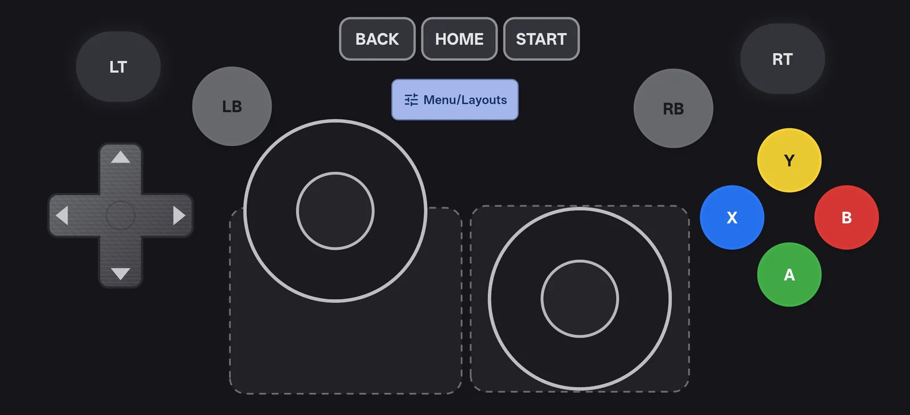
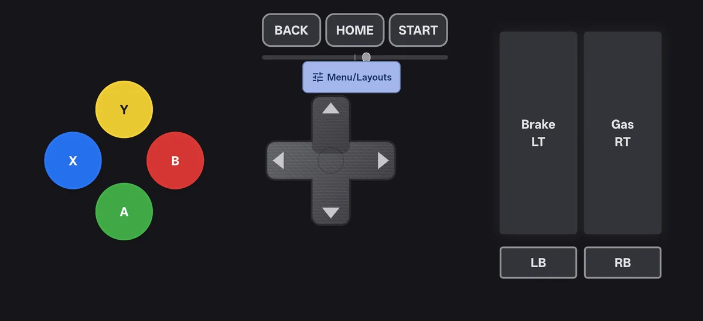
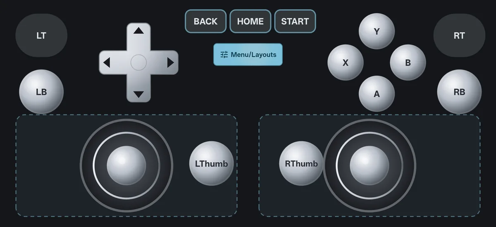
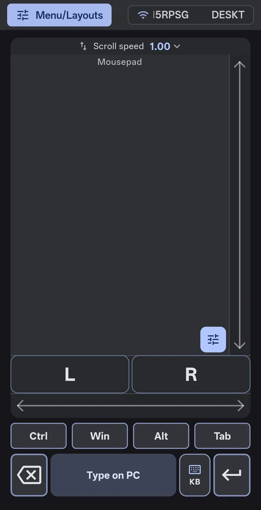
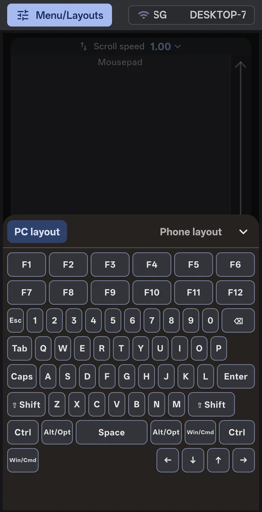
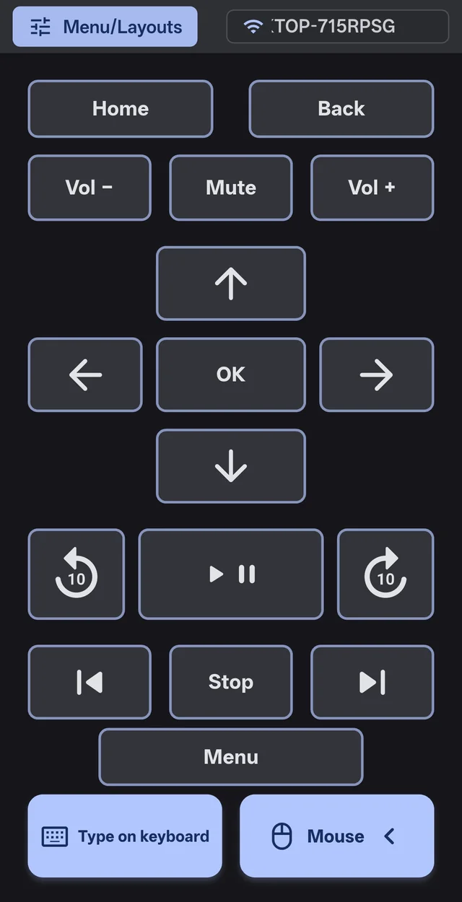
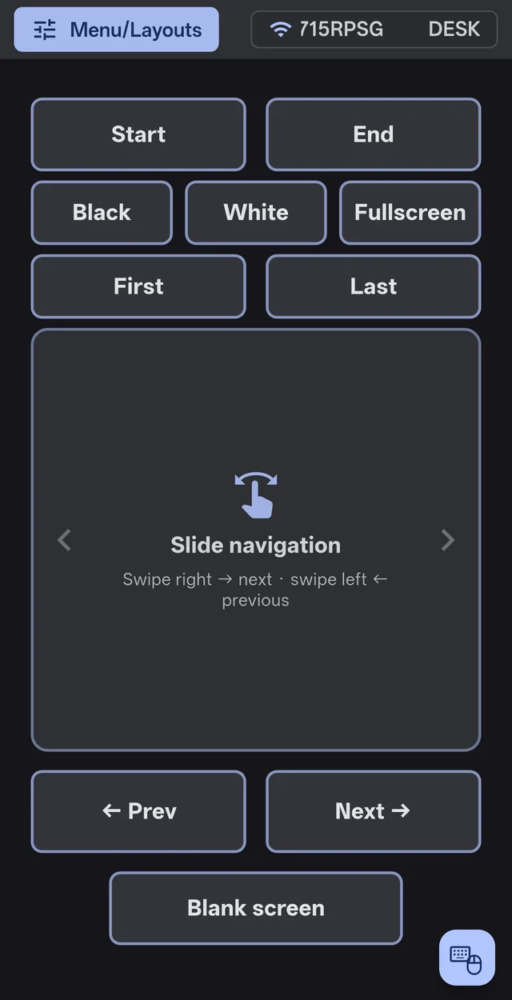
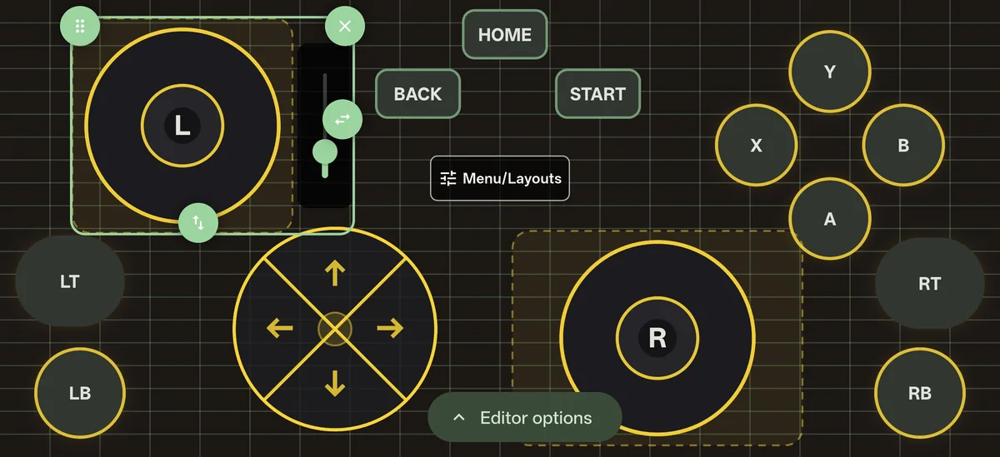
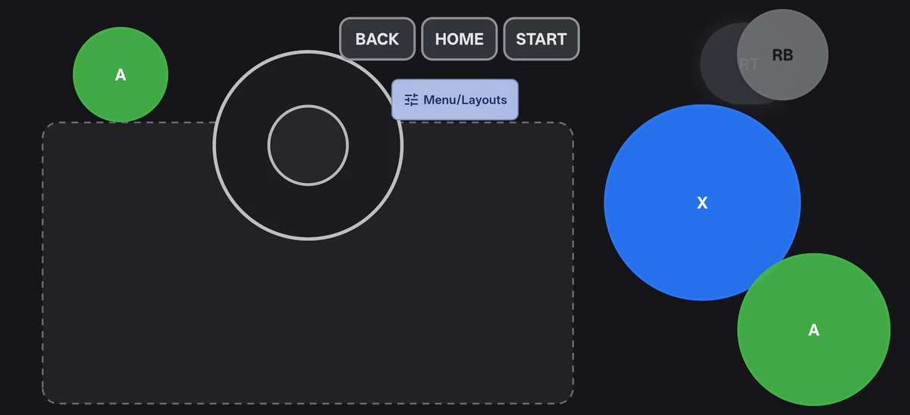

Your phone is the controller.
A gamepad, keyboard and mouse, TV remote and slide clicker for your PC, Mac, TV or tablet.
Free. Over Bluetooth there is nothing to install on the other device.

A real controller, on your phone
Sticks, triggers, bumpers and a D-pad. Games see a real controller, so they just work.


- Floating sticksThey appear wherever your thumb lands.
- Stick clicksDouble-tap a stick to press it in.
- Couch co-opUp to 16 phones on one Windows PC, each its own controller.
More than a gamepad
Switch layouts from the menu. Same app, same connection.
-

MouseTouchpad, clicks, scroll and shortcuts. -

KeyboardEvery key, including F-keys and shortcuts. -

TV remoteVolume, playback and arrows for any TV app. -

Slide clickerPowerPoint, Google Slides or Canva.
Connect your way
Bluetooth
Nothing to installPair once from the Bluetooth settings on your PC, Mac, TV or tablet. It shows up as a real gamepad, keyboard and mouse.
Bluetooth setup guideWi‑Fi with Companion
Windows, optionalThe lowest delay, finds your PC by itself, and lets up to 16 phones play at once.
Version 2.4.1 for Windows 10 and 11 (x64)
Seeing a browser or SmartScreen warning?
Companion is new, so Windows and your browser don't recognise it yet. That's normal for new software.
- Browser says the file isn't commonly downloaded: open your downloads (Ctrl + J), open the file's menu and choose Keep, then Keep anyway if asked.
- "Windows protected your PC": click More info, then Run anyway.
- Approve the User Account Control prompt so setup can add the ViGEmBus driver.
Setup adds the open-source ViGEmBus driver only if it's missing, so games see your phone as an Xbox controller. For Wi‑Fi, allow Companion on private networks in Windows Firewall.
Also in the app

- Free to downloadOn Google Play.
- No accountOpen it and play.
- Stays on your networkYour input goes straight from your phone to your device.

Pick up your phone. Press play.
Free for Android. Companion for Windows is optional.